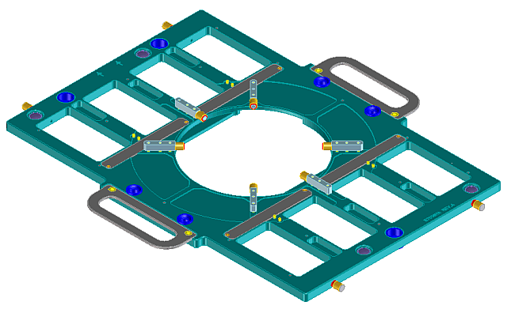
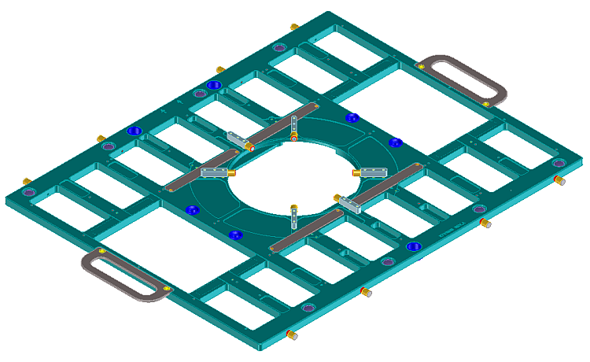
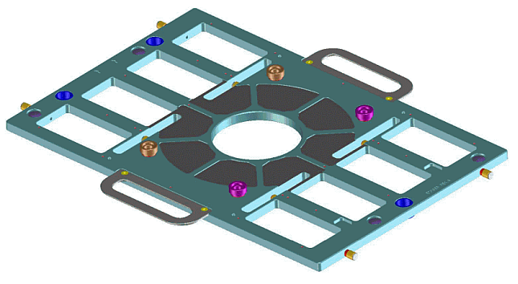
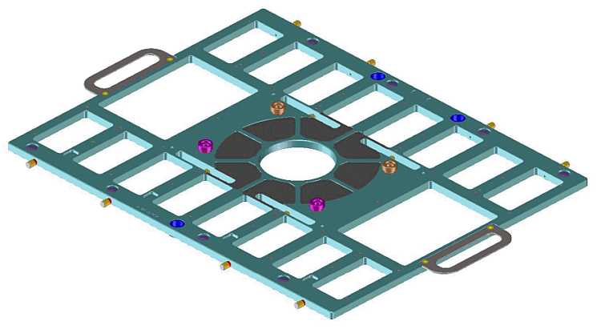

WPI DUT board stiffeners
| Supported V93000 systems : Smart Scale (SmarTest 7), Pin Scale |
Pin Scale 12 inch WPI interface
Advantest supports two stiffeners for the Pin Scale 12 inch WPI interface:
- Half-size stiffener E7018HA for 512 channel boards

- Full-size stiffener E7018HB for 1024 channel boards

Pin Scale 9.5 inch WPI interface
Advantest supports two stiffeners for the Pin Scale 9.5 inch WPI interface:
- Half-size stiffener (legacy product number: E7018BA) for 512 channel boards

- Full-size stiffener (legacy product number: E7018BB) for 1024 channel boards

Functional changes
- Introduced before SmarTest 6.3.2